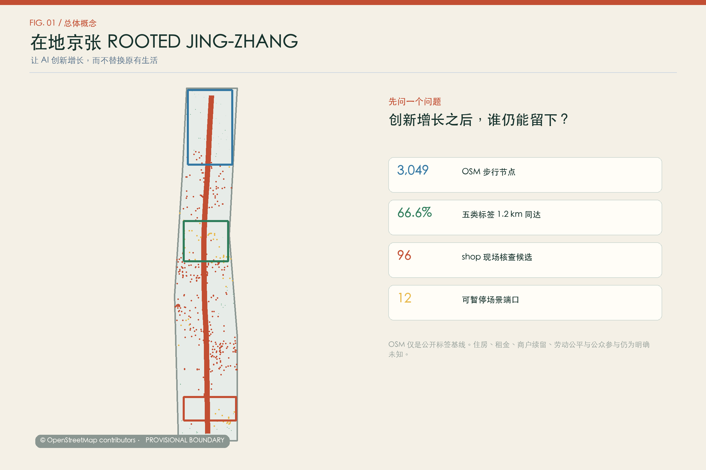
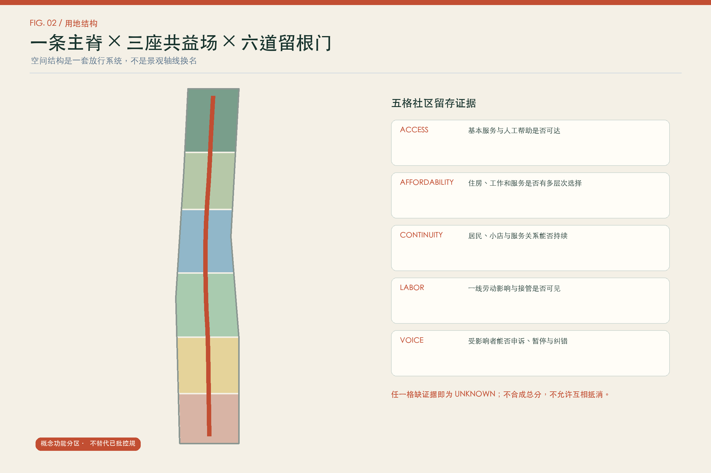
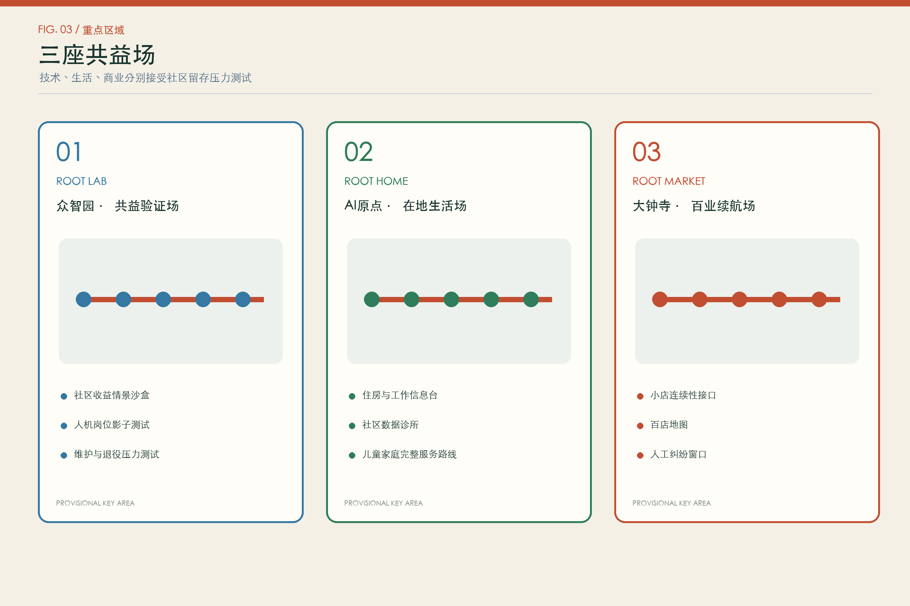
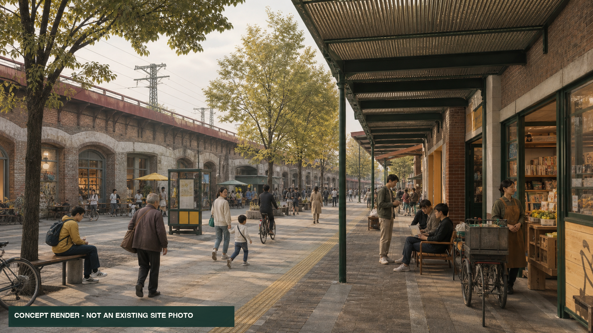
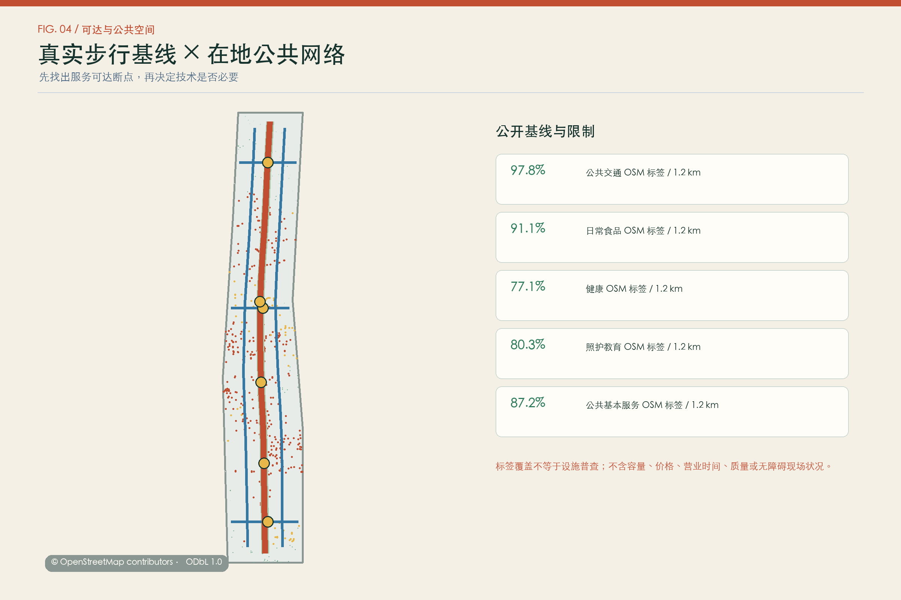
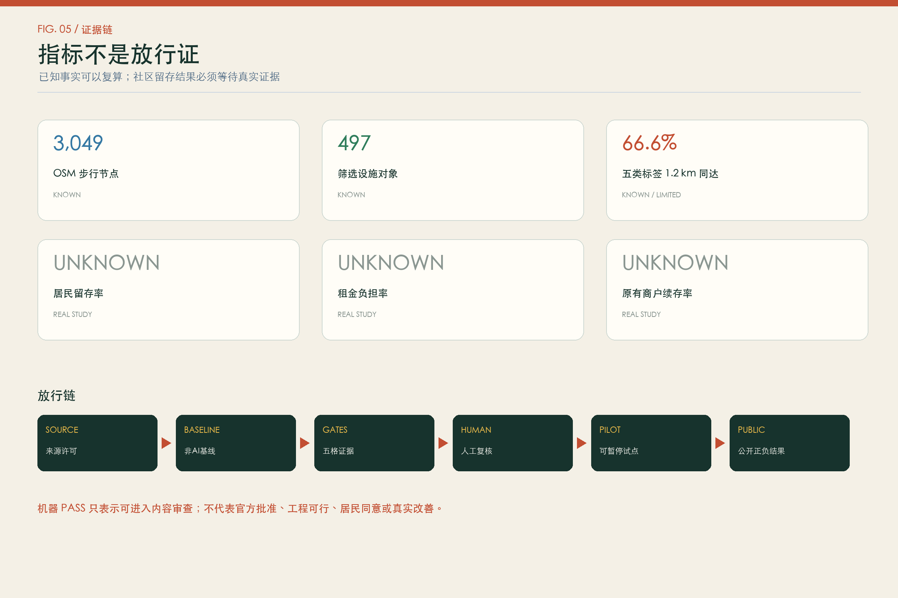

社区收益情景沙盒
众智园 · 非AI基线 · 人工复核 · 可暂停
Grow the innovation. Keep the neighborhood.
让 AI 创新增长，而不替换原有生活。
总体边界与三处重点区只用于生成、讨论和自检。住房、租金、商户续留、劳动与参与结果均保持 unknown。

社区留存不是附加风险条款，而是所有产业试点、公共投资和城市更新的放行条件。AI 可以比较聚合情景，但不得给个人、家庭、租户、劳动者或商户计算搬迁风险分。
统筹研究范围识别区域社区收益；总体设计范围组织在地主脊与留根门；三处重点区域运行差异化压力测试。建筑原型只表达共益服务功能，不对应现实楼栋。
基本服务与人工帮助可达
住房、工作和服务有多层次选择
居民、小店和服务关系持续
一线劳动影响与接管可见
能申诉、暂停和纠错



图像只表达材料、尺度和日常使用关系，不是现状照片、批准方案、居民同意或工程承诺。完整生成披露见同名 .prompt.json。
众智园 · 非AI基线 · 人工复核 · 可暂停
众智园 · 非AI基线 · 人工复核 · 可暂停
大钟寺 · 非AI基线 · 人工复核 · 可暂停
全带 · 非AI基线 · 人工复核 · 可暂停
AI原点 · 非AI基线 · 人工复核 · 可暂停
AI原点 · 非AI基线 · 人工复核 · 可暂停
两翼 · 非AI基线 · 人工复核 · 可暂停
原点 · 非AI基线 · 人工复核 · 可暂停
大钟寺 · 非AI基线 · 人工复核 · 可暂停
三处 · 非AI基线 · 人工复核 · 可暂停
主脊 · 非AI基线 · 人工复核 · 可暂停
全带 · 非AI基线 · 人工复核 · 可暂停

© OpenStreetMap contributors，ODbL 1.0。缺标签不证明现场设施不存在；本分析不含容量、价格、营业时间、质量和无障碍现场状况。

任一证据格缺真实资料即标 unknown；不允许以增长均值或其他高分抵消受损群体。
真实下载和分析步行网络及设施标签。
届时补充公交与多模式可达，不伪装为当前结果。
届时比较长期情景，不用于当前个人风险判断。
假设：总体与重点区 geometry 为 provisional；住房、租赁、商户、劳动和参与证据缺失。来源详见 sources.json 与 visual/assets/ 中的证据 JSON。
公告 1.3、1.4、1.5 和 agent.1-agent.6 已映射到正文、GeoJSON、metrics、图纸、HTML 与三份矩阵。机器自检只证明结构可读和指标可复算，不表示官方批准、工程可行或居民同意。